作者：创世魂
● 菜单设计
设计流程如下图：
1、首先定义一个新的类，基础类务必填写“菜单类”，随后右键可以打开菜单设计器。
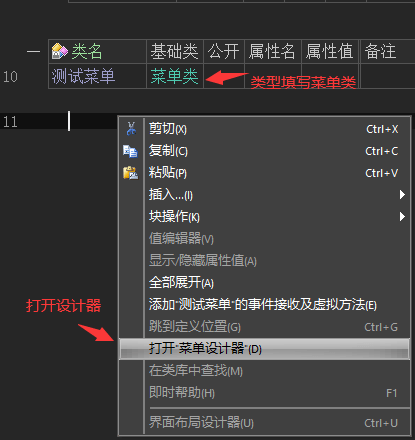
2、左侧是具体菜单项目设计效果，右侧是常用的菜单项目设置。
3、无虚线的菜单属于“根菜单”，根菜单不能单独存在，必须“向后插入”新菜单后使用“右移”设置成子菜单。
4、如果想要让子菜单也拥有子菜单，继续点击“右移”增加虚线即可。
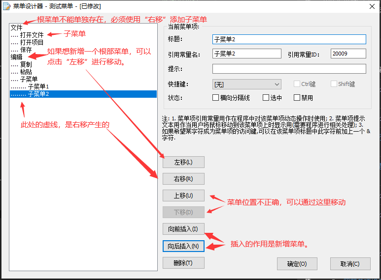
5、设计完毕后效果如下图。
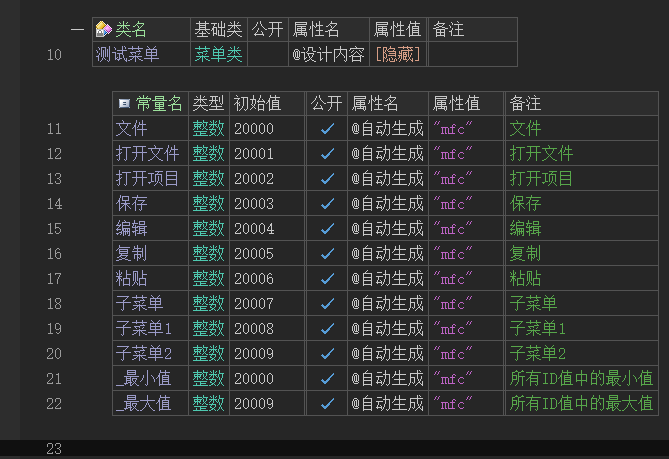
● 菜单添加到窗口
● 菜单点击事件
●实现窗口右键菜单
代码编写如下图：
1、首先设计一个菜单。
2、主窗口添加“鼠标右键被放开”事件，调用“弹出菜单()”方法就可以弹出菜单。
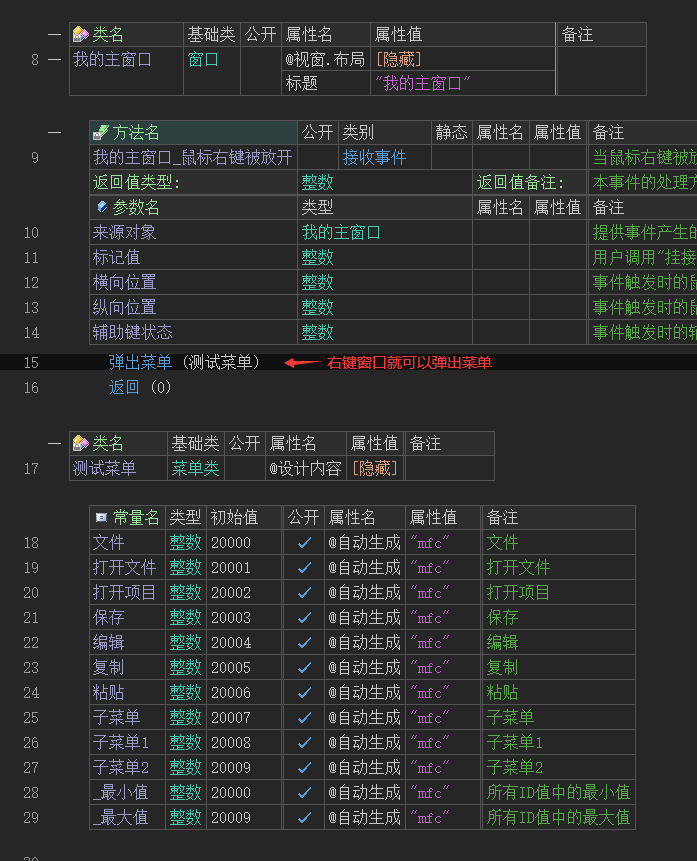
运行效果如下图：
最终主窗口按下右键时会出现菜单。
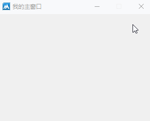
● 右键和窗口菜单一致
通过上篇图文教程学会了右键菜单，但是会发现一个问题。
如果设计的菜单包含多个根菜单的时候，只会弹出第一个菜单。
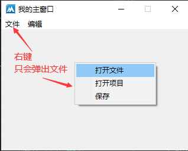
下面实现弹出编辑菜单：
1、首先对已经设计好的窗口菜单进行复制一份，并修改类名后打开设计器。
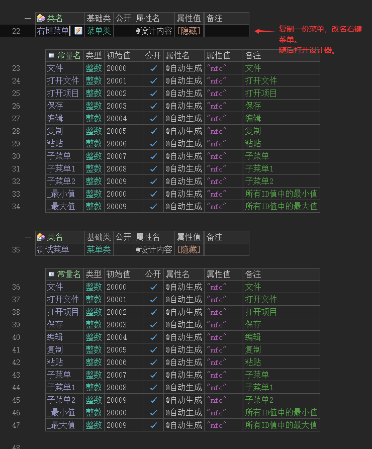
2、打开设计器后，如果想要弹出编辑菜单，就将其它菜单删除。
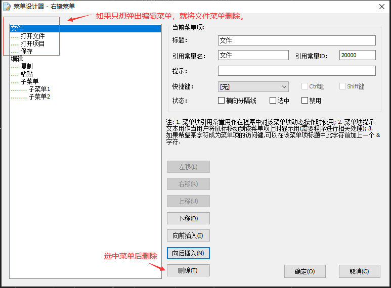
3、删除效果如下图。
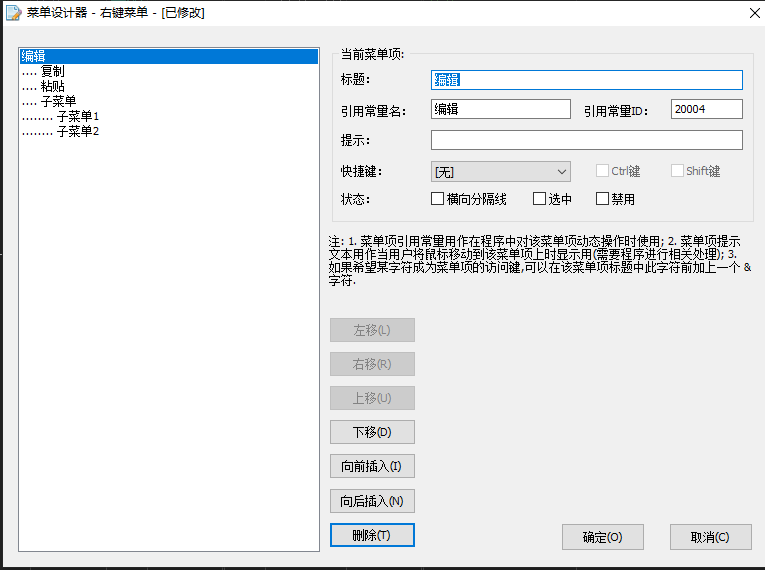
4、删除后代码如下图，注意看编辑菜单的初始值，两个菜单中都是一致的。
如果常量值一致，证明操作无误，方便接下来的菜单点击事件。
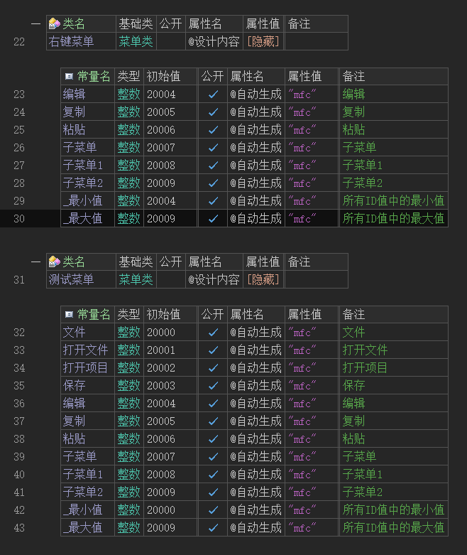
5、添加窗口的“鼠标右键被放开”事件，并弹出右键菜单。
6、添加窗口的“创建完毕”事件，设置窗口菜单。
7、添加接收到命令事件，判断菜单被点击。此
处的命令代码实际上就是菜单的常量值，直接判断“2005”也可以判断复制被点击。
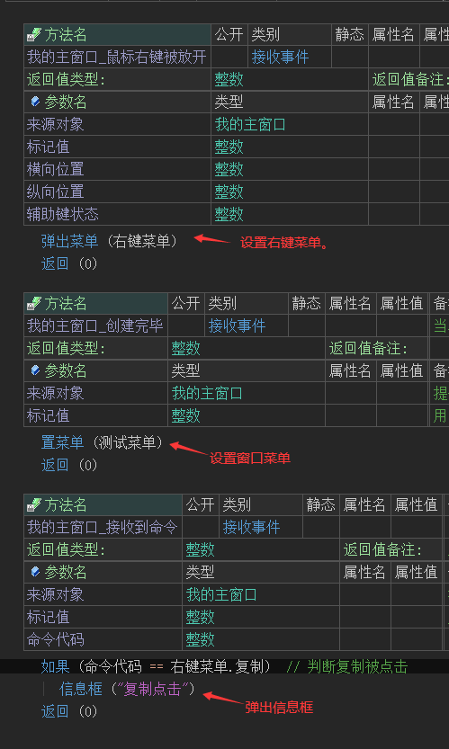
运行效果如下图：
最终可以看到窗口菜单和右键菜单都可以弹出信息框，证明两个菜单的命令是通用的，不用重复编写两套命令。
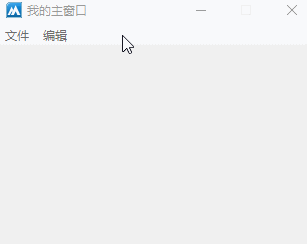
● 托盘图标菜单
代码编写如下图：
1、首先设计一个菜单。
2、主窗口创建完毕后设置托盘图标。
3、添加托盘事件并调用“弹出托盘菜单”方法。
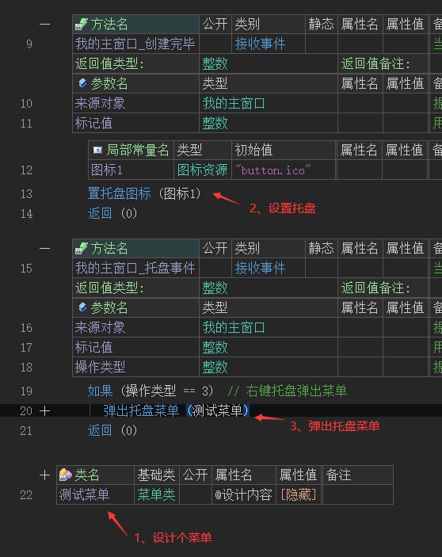
运行效果如下图：
最终右键托盘图标可以弹出被设计的菜单。
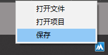
● 允许菜单项
“允许菜单项”帮助文档如下图：
通过本方法可以设置菜单是否允许操作。
参数1：提供要设置的菜单ID。
参数2：提供是否禁止，为真则禁止操作。
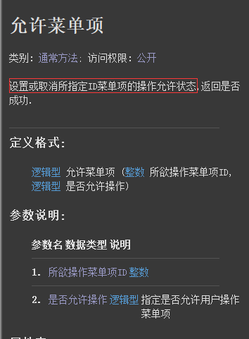
“是否被允许”帮助文档如下图：
通过本方法可判断指定菜单是否允许操作，返回真表示允许操作。
参数1：提供要判断的菜单ID即可。
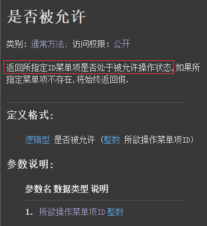
代码编写如下图：
1、窗口创建完毕后设置实例菜单，方便后续操作菜单。
2、按钮点击后通过菜单变量调用“允许菜单项”和“是否被允许”两个方法。
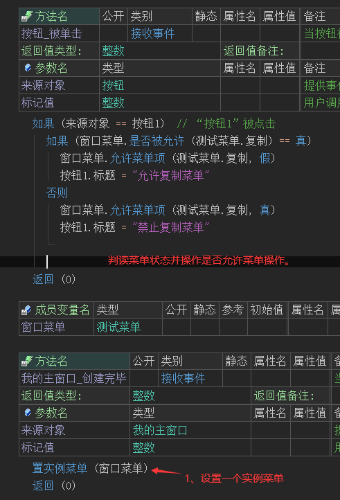
运行效果如下图：
最终按钮点击后“复制”菜单会在禁止操作和允许操作之间进行切换。
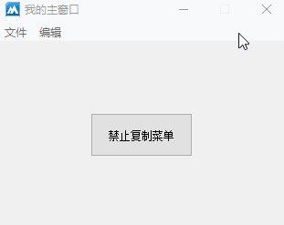
●删除菜单项
帮助文档如下图：
调用本方法课实现删除指定菜单。
参数1：提供要删除的菜单ID即可。
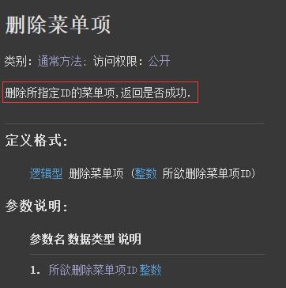
代码编写如下图：
1、窗口创建完毕后设置菜单。
2、按钮点击后删除“复制”菜单。
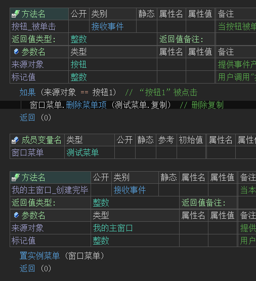
运行效果如下图：
最终可看到复制菜单被删除。
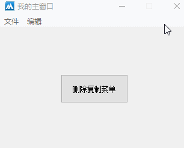
● 取菜单项提示
“取菜单项提示”帮助文档如下图：
通过本方法可以取出指定菜单的提示内容，无提示返回空文本。
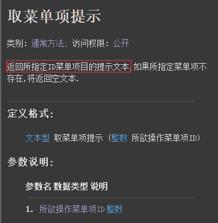
“置菜单项提示”帮助文档如下图：
通过本方法可设置指定菜单的提示内容。
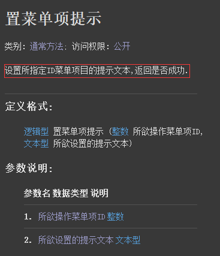
代码编写如下图：
1、窗口创建完毕后设置菜单。
2、按钮1点击后设置“复制”的菜单提示。
3、按钮2点击后取出“复制”的菜单提示。
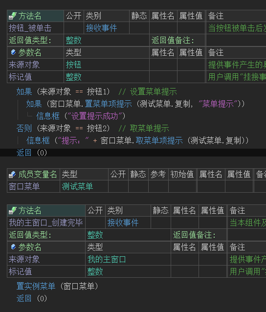
运行效果如下图：
最终可看到提示被成功设置和取出。
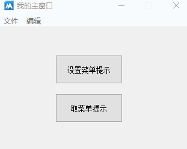
● 取菜单项标题
“置菜单项标题”帮助文档如下图：
通过本方法课设置指定菜单的标题。
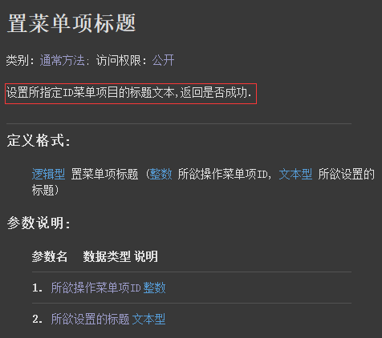
“取菜单项标题”帮助文档如下图：
本方法可取出指定菜单的标题。
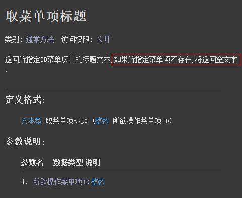
代码编写如下图：
1、窗口创建完毕后设置菜单。
2、按钮1点击后修改“复制”菜单的标题。
3、按钮2点击后取出“复制”菜单标题。
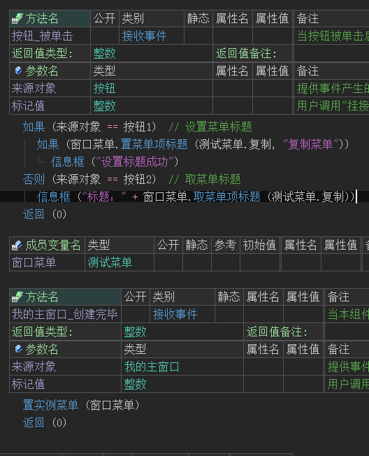
运行效果如下图：
可以看到按钮点击前后，菜单标题被修改，并且也可以成功取出被修改的标题。
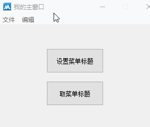
●插入菜单项
帮助文档如下图：
通过本方法可在指定菜单位置插入一个菜单，成功返回菜单ID。
参数1：提供新菜单的id值，默认为0.
参数2：提供新菜单标题、
参数3：提供在哪个菜单ID之前插入。
参数4：如果指定本参数，将插入到指定菜单的子菜单尾部。
参数5：提供新菜单的提示文本。
参数6：提供是否选中此菜单。
参数7：提供是否禁止操作此菜单。
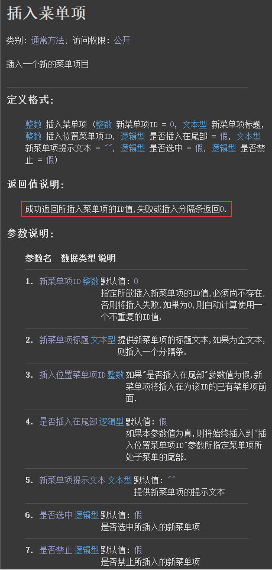
代码编写如下图：
1、窗口创建完毕后设置窗口菜单。
2、按钮点击后在“粘贴”前插入“火山菜单”，同时选中此菜单。
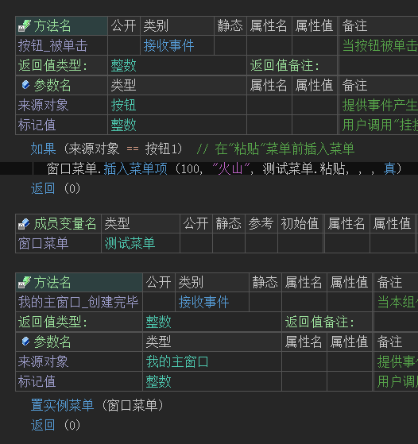
运行效果如下图：
最终“火山菜单”被成功插入，并且也处于选中状态。
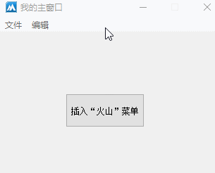
● 是否被选中
“是否被选中”帮助文档如下图：
通过本方法可判断指定菜单是否被选中，如果菜单不存在将返回假。
设置成功返回真，失败返回假。
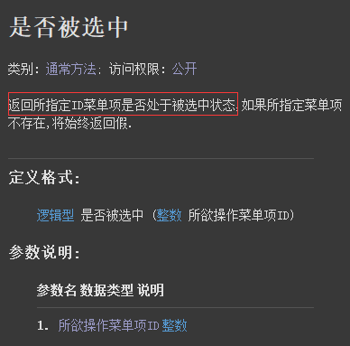
“选中菜单项”帮助文档如下图：
通过本方法可设置指定菜单是否被选中。
参数1：提供要设置的菜单ID。
参数2：提供真将设置为选中状态，否则不选中。
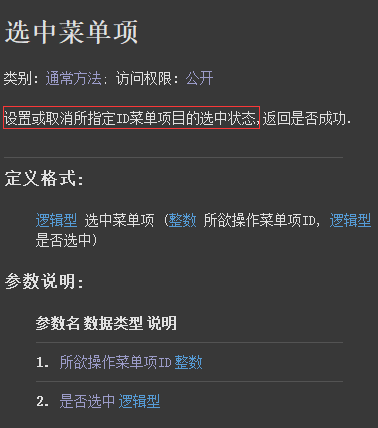
代码编写如下图：
1、窗口创建完毕后设置菜单。
2、按钮1点击判断“复制”菜单是否被选中。
3、按钮2点击设置“复制”菜单选中。
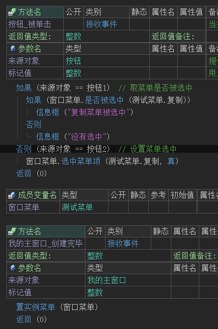
运行效果如下图：
最终可看到“复制”菜单被成功操作。
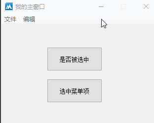
● 翻转菜单项选中状态
帮助文档如下图：
通过本方法可翻转菜单的选中状态，返回是否翻转成功。
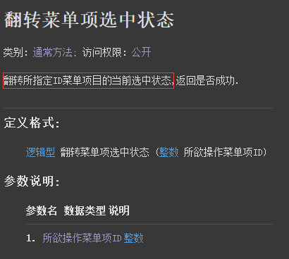
代码编写如下图：
1、窗口创建完毕后载入菜单。
2、按钮点击后翻转复制菜单的选中状态。
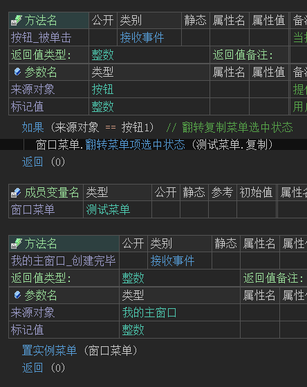
运行效果如下图：
可以看到“复制菜单”在选中和未选中之间翻转操作。
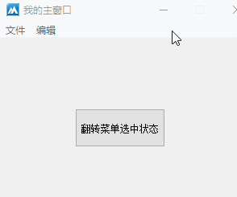